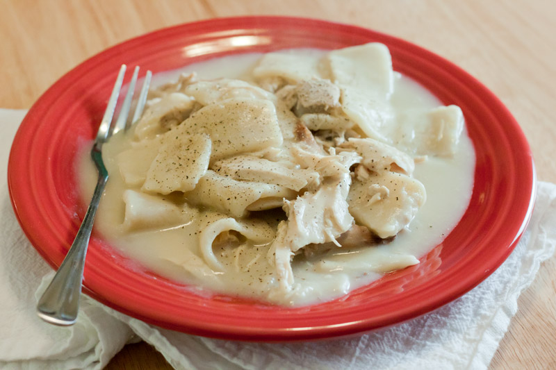

Return to Home
Old-Fashioned Chicken and Dumplings

The warm, cozy classic that you can't beat!
Chicken and dumplings are a family-favorite that never fails to please the whole table.
This recipe is one I encourage anyone to really play around with and make your own additions to, such as your favorite veggies!
Ingredients
- 2 (10.5 ounce) cans condensed cream of chicken soup
- 3 (14 ounce) cans chicken broth
- 3 cups shredded cooked chicken meat
- 2 (10 ounce) cans refrigerated biscuit dough
Steps
- Stir condensed soup, chicken broth, and shredded chicken together in a large saucepan over medium-high heat until it begins to simmer.
- Cut each biscuit into quarters, and gently stir into the soup.
- Reduce heat to medium-low, cover, and simmer until biscuits are no longer doughy in the center. (10-15 minutes)
- Season as preferred, serve, and enjoy!